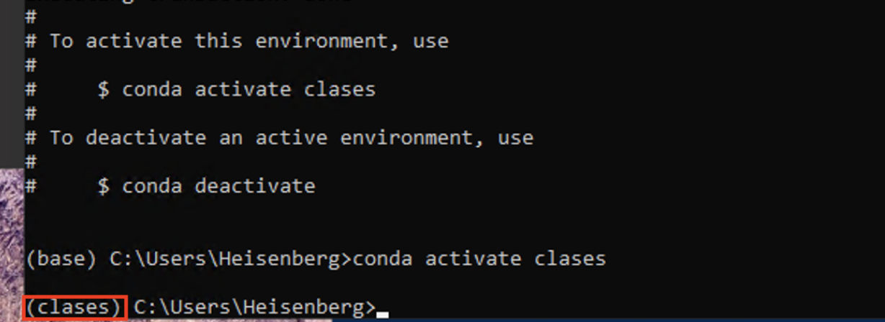
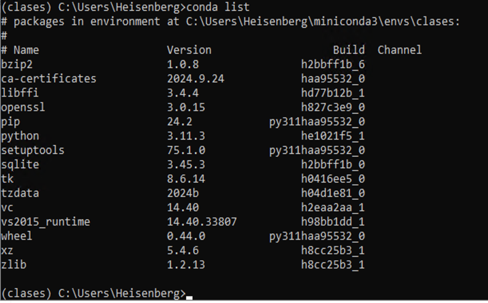
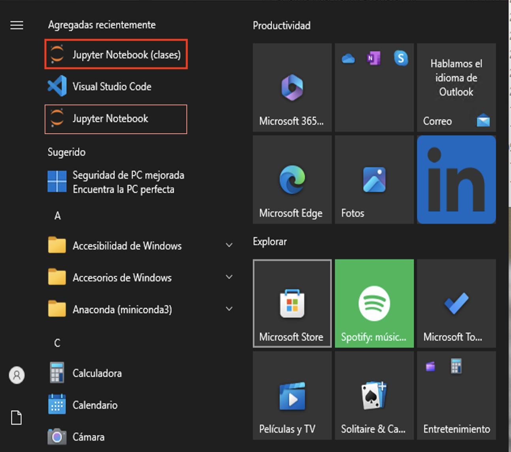
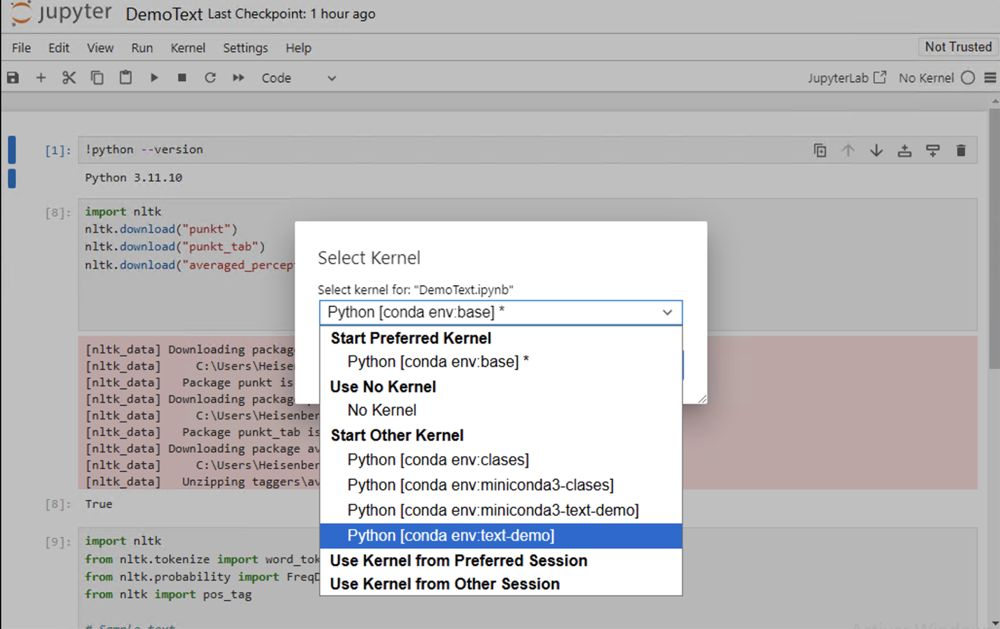

Ambientes#
Uno de los problemas principales de cualquier proyecto de software es el mantenimiento de las dependencias del código. Python no es ajeno a ello. En Python las bibliotecas de software se distribuyen a través de paquetes. Cada paquete tiene su nombre y su versión.
La manera tradicional de encapsular dependencias en proyectos que tiene Python es a través de la creación de ambientes virtuales o virtual environments. De esta forma, un conjunto de paquetes se instalan en forma local en un directorio aislado de otros, en lugar de ser instalado en forma global. De esa forma, determinados proyectos acudirán a cierto environment, mientras otros usarán otros… Por ejemplo, un proyecto de Machine Learning requerirá de ciertos paquetes de manejo de Álgebra Lineal, optimización en GPU, etc., mientras que un server web no necesitará de ellos.
Para manejar ambientes se usan ciertas herramientas equivalentes como:
La distribución Anaconda a través del comando conda también puede administrar environments, y es la que usaremos en este curso.
Gestionando ambientes con conda#
Empecemos viendo qué ambientes tenemos en nuestro sistema con:
conda env list
Si recién hemos instalado Python con miniconda, obtendremos:
(base) C:\Users\Heisenberg>conda env list
# conda environments:
#
base * C:\Users\Heisenberg\miniconda3
Vemos que existe un ambiente default que se llama base, que también es el indicado entre paréntesis en el prompt. Este ambiente se crea al instalar Python a través de miniconda.
El comando
condatiene ayudas instructivas, basta agregar--helpal final del comando
Creando ambientes#
El comando para crear un nuevo ambiente es conda create -n <nombre_del_ambiente>:
conda create -n clases
Channels:
- defaults
Platform: win-64
Collecting package metadata (repodata.json): done
Solving environment: done
## Package Plan ##
environment location: C:\Users\Heisenberg\miniconda3\envs\clases
Proceed ([y]/n)? y
Preparing transaction: done
Verifying transaction: done
Executing transaction: done
#
# To activate this environment, use
#
# $ conda activate clases
#
# To deactivate an active environment, use
#
# $ conda deactivate
El resultado de la ejecución del comando nos indica cómo activar y desactivar el ambiente. ¿Qué significa esto? Para poder trabajar ordenadamente en un proyecto, activamos primero el ambiente, instalamos los paquetes requeridos, programamos, etc. etc., y luego desactivamos el ambiente. Por supuesto que la instalación de paquetes en un ambiente se hace una única vez.
conda activate clases

Nótese que el prompt cambia indicando bajo qué ambiente estamos trabajando. En efecto:
(clases) C:\Users\Heisenberg>conda env list
# conda environments:
#
base C:\Users\Heisenberg\miniconda3
clases * C:\Users\Heisenberg\miniconda3\envs\clases
Nos indica que hay un nuevo ambiente creado, y es el que está activo (indicado por el asterisco).
Para borrar un ambiente, usamos
conda env remove --name <nombre_del_ambiente>
Recordar desactivar el ambiente antes de borrarlo. De todas formas,
condaavisará si uno se olvida de este paso
conda deactivate
conda env remove --name clases
Más documentación y opciones por acá.
Instalando paquetes#
Por defecto conda create -n <nombre_del_ambiente> no instala ningún paquete, con lo cual, tenemos que empezar instalando Python:
Recordar que estamos instalando paquetes dentro del ambiente, así que hay que asegurarse que hayamos hecho
conda activate <nombre_del_ambiente>
conda install python=3.11.4
Instalará la versión 3.11.4 de Python. La sintaxis es en general
conda install <nombre_del_paquete_1>[=<versión>] <nombre_del_paquete_2>[=<versión>] ...
Es optativo especificar la versión del paquete, por defecto conda usará la versión más nueva (compatible con el resto de los paquetes que se están instalando o están instalados en el ambiente).
Ahora sí, podemos usar python
python --version
Python 3.11.3
Para ver qué paquetes están instalados, hacemos conda list

Ambientes y Notebooks#
Una vez que creamos un ambiente y le agregamos paquetes, nos gustaría utilizarlo desde un jupyter notebook. Hay algunas opciones
Instalando jupyter#
Una opción es instalar jupyter en cada ambiente, activarlo y correrlo via python -m notebook como hicimos al comienzo en el ambiente base. Si se prefiere, también se puede instalar jupyter labs con conda install -c conda-forge jupyterlab y luego correr jupyter lab desde la terminal.
En este caso tendremos un nuevo jupyter en el menú de windows

Instalando nb_conda_kernels#
Jupyter es una plataforma poderosa y permite utilizar otros kernels. Un kernel de Jupyter es un proceso que corre paralelamente al notebook, y se ocupa de la ejecución del código. Si bien lo usaremos en Python, Jupyter puede usar otros kernels en distintos lenguajes. El paquete ipykernel es el que encapsula a IPython (la consola interactiva) para que pueda usarse desde jupyter, y se instala como dependencia del paquete jupyter.
El paquete nb_conda_kernels permite que cualquier notebook pueda ejecutarse con distintos ambientes (más documentación acá).
Atención!
ipykerneltiene que estar instalado en cada ambiente que se quiera utilizar con esta opción.

En resumen:
Si se quiere usar notebooks con un ambiente dedicado, instalar jupyter en cada ambiente.
Si se desea usar notebooks con distintos ambientes, instalar
ipykernelen cada ambiente ynb_conda_kernelsen el ambiente desde el cual se correrá jupyter (en general, es el default base)
Visual Studio Code#
VS Code maneja esto automáticamente, instalando ipykernel en cada ambiente de ser necesario, y realizando todas las conexiones necesarias para que uno pueda tener disponibles todos los ambientes al abrir un notebook.
Compartiendo ambientes#
La forma más sencilla es crear un archivo con la lista de paquetes del ambiente local que estamos usando, compartir dicho archivo y recrear el ambiente en la nueva locación. Extrayendo el ambiente local
conda env export --from-history > environment.yml
Resulta en un archivo YAML de la forma:
name: clases
channels:
- defaults
dependencies:
- ipykernel
- mypy
- jupyter
Esta es la forma más general de exportar los paquetes. Obsérvese que están incluídos aquellos paquetes que hemos instalado explícitamente con conda.
Se estila usar como nombre de archivo
environment.yml, pero se puede usar cualquier otro nombre de base,
Existen otras maneras más específicas de crear archivos que contengan el listado de paquetes instalados, pero adolecen de algunos problemas, como por ejemplo, no son multiplataforma.
Una vez copiado el archivo yaml en la nueva máquina/usuario/etc., procedemos a crear el ambiente con
conda env create -n clases2 --file environment.yml
donde en este caso environment.yml es el archivo que creamos antes, y clases2 sería el nombre del nuevo ambiente.